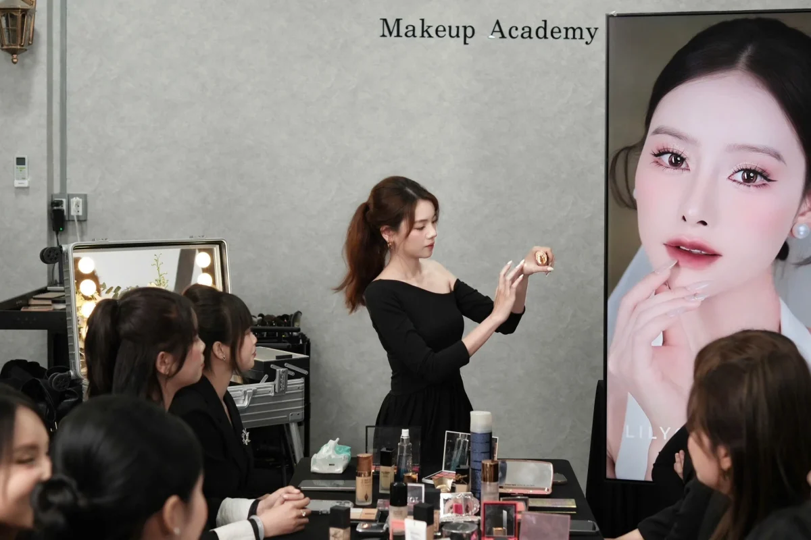

Bạn đang say mê với cây cọ, thỏi son và những layout trang điểm biến hóa lung linh? Khi lướt TikTok hay Instagram, thấy các makeup artist xuất hiện với phong thái chuyên nghiệp, thời thượng và nghe đồn mức thu nhập vài chục triệu mỗi tháng, chắc hẳn bạn đã không ít lần tự nhủ: "Liệu mình có thể theo nghề này được không?"
Thế nhưng, khi vừa mở lời muốn học nghề, người thân hay bạn bè lại ái ngại đặt câu hỏi: "Học cái đó ra rồi làm gì? Có sống ổn định được lâu dài không con?"
Tôi rất thấu hiểu nỗi băn khoăn đó. Những ngày đầu mới chập chững bước vào nghề trang điểm, chính Lily Chen cũng từng đối mặt với những hoài nghi tương tự. Bài viết này tôi muốn chia sẻ thẳng thắn, không tô hồng bức tranh thị trường: Nghề makeup có tương lai không, các khoảng thu nhập tham khảo ra sao, có những hướng đi nào — và quan trọng nhất, vì sao có người sống rất tốt với nghề, trong khi có người lại bỏ cuộc giữa chừng.
Nghề makeup có tương lai không? Nhìn thẳng vào nhu cầu thị trường hiện nay
Trước khi bàn đến chuyện thu nhập bao nhiêu con số, chúng ta cần nhìn vào một quy luật kinh tế đơn giản: Nghề nào còn nhu cầu từ xã hội thì nghề đó còn tương lai.
Và makeup là một trong số ít những nghề dịch vụ cá nhân hóa mà nhu cầu gần như không bao giờ cạn kiệt:
- Mùa cưới quanh năm: Mỗi ngày tại Việt Nam có hàng nghìn lễ ăn hỏi, tiệc cưới diễn ra — và bất kỳ cô dâu nào trong ngày trọng đại đời mình cũng cần được chăm chút lớp trang điểm rạng rỡ nhất.
- Sự kiện, tiệc tùng và kỷ yếu: Mùa chụp ảnh kỷ yếu học sinh - sinh viên, tiệc tất niên doanh nghiệp (Year-End Party), sự kiện ra mắt sản phẩm diễn ra liên tục, tạo nên nhu cầu makeup chuyên nghiệp cực lớn.
- Bùng nổ truyền thông số và livestream: Làn sóng KOC/KOL, nhà sáng tạo nội dung TikTok và các phiên livestream bán hàng đòi hỏi người xuất hiện trước ống kính phải luôn có diện mạo chỉn chu, sắc nét.
- Hệ sinh thái studio & áo cưới mở rộng: Các trung tâm ảnh viện cưới, tiệm váy dạ hội và studio beauty tại Bình Dương liên tục tuyển dụng chuyên viên trang điểm có tay nghề thực chiến.
Vì vậy, câu hỏi "nghề makeup có tương lai không" thực chất không nằm ở chỗ thị trường có cần dịch vụ này hay không — bởi thị trường luôn sẵn sàng chi trả. Câu hỏi cốt lõi nằm ở chỗ: Bạn có đủ tay nghề và năng lực thực tế để nắm bắt phần việc đó hay không?
Makeup artist kiếm được bao nhiêu một tháng?
Đây là thắc mắc rất phổ biến của người mới bắt đầu. Dưới đây là bảng phân tầng thu nhập mang tính tham khảo, dựa trên bài viết gốc của học viện kết hợp thông tin định hướng nghề nghiệp chung (tham khảo tài liệu hướng nghiệp từ Glints Vietnam). Mức thu nhập thực tế trong nghề không cố định mà biến động lớn tùy theo tay nghề, tệp khách hàng và khả năng tự xây dựng uy tín cá nhân:
| Vị Trí / Cột Mốc | Thu Nhập Tham Khảo | Đặc Điểm & Thực Tế Công Việc |
|---|---|---|
| Freelancer mới ra nghề | ~200.000 – 400.000đ/lần (Khoảng 6 – 7 triệu/tháng) |
Lượng khách ban đầu còn ít, thời gian chủ yếu dành để thực hành và tích lũy portfolio. |
| Makeup artist tự do chuyên nghiệp | 10 – 20 triệu/tháng | Tay nghề vững vàng, có tệp khách quen giới thiệu, biết chụp ảnh layout và xây dựng trang cá nhân. |
| Nhân viên cố định tại Studio cưới | 4 – 5 triệu lương cơ bản + Hoa hồng dịch vụ | Thu nhập ổn định, môi trường cọ xát liên tục, học hỏi được tác phong làm việc nhóm và quy trình ảnh viện. |
| Chuyên gia makeup sự kiện / Show lớn | Thu nhập cao theo dự án | Đòi hỏi nhiều năm kinh nghiệm, gu thẩm mỹ đỉnh cao và mối quan hệ uy tín trong ngành giải trí, thời trang. |
*(Lưu ý: Bảng thu nhập trên chỉ mang tính chất định hướng và tham khảo từ bài viết gốc của học viện và tài liệu hướng nghiệp của Glints Vietnam. Đây không phải khảo sát thống kê chính thức hay mức thu nhập cam kết cho mọi trường hợp).*
Bảng số liệu trên cho thấy: Khoảng cách giữa người mới bắt đầu và người làm nghề lâu năm phản ánh trực tiếp sự khác biệt về tay nghề, tốc độ thao tác và khả năng xử lý các tình huống thực tế trên nhiều nền da khác nhau.
Bên cạnh đó, nghề trang điểm mang đến sự tự do và linh hoạt cao về thời gian. Bạn có thể vừa làm công việc hiện tại, vừa nhận khách vào sáng sớm hoặc cuối tuần, tự chủ thu nhập mà không bị gò bó trong khuôn khổ bàn giấy 8 tiếng mỗi ngày.
4 hướng đi phát triển của nghề makeup — bạn hợp hướng nào?
Nhiều người thường lầm tưởng học trang điểm xong chỉ có duy nhất một con đường là "xách cốp đi trang điểm dạo". Thực tế, ngành này mở ra ít nhất 4 hướng phát triển sự nghiệp đa dạng tùy theo tính cách và định hướng của mỗi người:
1. Makeup artist tự do (Freelancer)
Bạn tự nhận khách trang điểm cưới hỏi, đi tiệc, chụp ảnh dã ngoại hoặc sự kiện. Bạn toàn quyền chủ động sắp xếp lịch trình làm việc và thu nhập tương xứng với năng lực. Hướng đi này phù hợp với những bạn yêu thích sự tự do, năng động và có tinh thần tự giác cao.
2. Làm việc cố định tại studio / ảnh viện áo cưới
Bạn nhận mức lương cứng ổn định kèm hoa hồng trên từng mặt khách. Đây là môi trường lý tưởng cho các bạn mới tốt nghiệp khóa học muốn tích lũy thêm kinh nghiệm thực chiến, hiểu rõ quy trình làm việc với ekip nhiếp ảnh, trang phục trước khi bước ra làm chủ.
3. Sáng tạo nội dung (KOC / KOL / Beauty Content Creator)
Sử dụng kỹ năng makeup để xây dựng kênh video ngắn trên TikTok, YouTube hoặc Facebook Reels. Bạn có thể chia sẻ mẹo làm đẹp, đánh giá mỹ phẩm và nhận lời mời hợp tác (booking) từ các nhãn hàng. Hướng đi này rất thích hợp với các bạn trẻ yêu thích công nghệ, thích quay dựng và có tư duy thẩm mỹ hiện đại.
4. Mở tiệm hoặc trở thành giảng viên đào tạo
Sau một thời gian tích lũy đủ kinh nghiệm, xây dựng được thương hiệu cá nhân uy tín và tệp khách hàng trung thành, bạn có thể đầu tư mở studio của riêng mình hoặc đứng lớp truyền nghề cho thế hệ học viên tiếp theo. Đây là cột mốc bền vững mà bất kỳ chuyên viên làm đẹp nào cũng hướng tới.
Sự thật ít ai nói: Vì sao nhiều bạn bỏ nghề giữa chừng?
Tôi sẽ không bao giờ đưa ra lời hứa suông rằng "cứ đăng ký học makeup là ngày mai sẽ giàu có". Khi nghiêm túc tìm hiểu nghề makeup có tương lai không, bạn cũng cần thẳng thắn nhìn vào mặt còn lại của tấm huy chương: Nghề nào cũng có người trụ vững thành công và có người phải ngậm ngùi bỏ cuộc.
Qua quá trình đồng hành cùng nhiều lứa học viên, tôi nhận thấy những người rời bỏ nghề thường rơi vào 3 nguyên nhân cốt lõi sau:
- Học chắp vá, hổng kiến thức nền: Tự học lỏm qua các clip ngắn trên mạng xã hội, chỉ quen thao tác trên khuôn mặt của chính mình nhưng hoàn toàn lúng túng khi gặp khách có da nhiều mụn, da dầu nhờn dễ mốc phấn (cakey) hay dáng mắt một mí. Chỉ sau vài lần khách phàn nàn, bạn sẽ nhanh chóng cảm thấy nản lòng và mất tự tin.
- Thiếu portfolio hình ảnh thực tế: Khách hàng đi tiệc hay cô dâu không thể đặt niềm tin vào một người không có bất kỳ hình ảnh tác phẩm người thật việc thật nào. Nếu không có bộ sưu tập hình ảnh chất lượng, bạn sẽ rất khó nhận được những đơn hàng đầu tiên.
- Thiếu kỹ năng tự giới thiệu bản thân: Dù tay nghề có tốt đến đâu nhưng nếu bạn không biết cách chụp ảnh layout cho sáng rõ, không biết đăng bài chia sẻ trên trang cá nhân thì khách hàng cũng không có cơ hội tìm đến bạn.
Điều đáng mừng là: Cả 3 rào cản trên đều hoàn toàn có thể khắc phục được nếu bạn được đào tạo đúng phương pháp ngay từ đầu. Người sống tốt với nghề trang điểm không nhất thiết phải là người có năng khiếu thiên bẩm — mà là người có nền tảng vững vàng, chịu khó rèn luyện kỹ thuật và liên tục cọ xát trên các mẫu mặt thật.

Lộ trình từ số 0 đến tự tin nhận khách tại Lily Chen Academy
Vậy một người chưa từng cầm cây cọ trang điểm sẽ bắt đầu như thế nào để có thể tự tin hành nghề? Tại Lily Chen Makeup Academy, toàn bộ lộ trình được thiết kế cô đọng qua 4 giai đoạn rõ ràng:
- Giai đoạn 1 — Thấu hiểu nền tảng: Nhận biết cấu trúc giải phẫu từng dáng mặt, phân loại tính chất các loại da (da khô, da dầu, da hỗn hợp, da mụn), nguyên lý phối màu sắc và cách chọn kem nền, che khuyết điểm không bị lệch tone.
- Giai đoạn 2 — Rèn luyện kỹ thuật chuẩn xác: Luyện tập thuần thục thao tác cầm cọ, kỹ thuật dặm mút ẩm giữ nền mỏng mịn, cách đi đường kẻ mắt eyeliner sắc mảnh, phẩy sợi lông mày tự nhiên và đánh khối 3D nâng đỡ gương mặt.
- Giai đoạn 3 — Thực chiến 90% trên mẫu thật: Trực tiếp trang điểm cho nhiều đối tượng người mẫu với độ tuổi, cấu trúc xương mặt và khuyết điểm da đa dạng. Đây chính là bước ngoặt quyết định bạn có thể tự tin bước ra làm nghề độc lập hay không.
- Giai đoạn 4 — Thi tốt nghiệp & Định hướng xây dựng Portfolio: Hoàn thiện bài thi tổng kết, nhận chứng chỉ tốt nghiệp và được hỗ trợ định hướng chụp bộ ảnh tác phẩm cá nhân chuẩn nét để bắt đầu đón nhận những vị khách đầu tiên.
Bạn có thể ghé thăm thư viện tác phẩm học viên của học viện để tận mắt chiêm ngưỡng những thành quả thực tế do chính tay các bạn học viên tạo nên sau từng khóa đào tạo.
Những lưu ý sống còn khi chọn nơi học nghề makeup tại Bình Dương
Rất nhiều bạn trẻ tại Bình Dương thường mang tâm lý phải lặn lội lên TP. Hồ Chí Minh mới tìm được trung tâm đào tạo chất lượng. Tuy nhiên, điều này thường kéo theo chi phí thuê trọ đắt đỏ, thời gian đi lại vất vả mà chưa chắc đã nhận được sự kèm cặp sát sao nếu lớp học quá đông học viên.
Giá trị cốt lõi của việc học nghề không nằm ở vị trí địa lý của thành phố, mà nằm ở chất lượng và phương pháp giảng dạy tại cơ sở đào tạo. Khi lựa chọn địa chỉ học makeup tại Bình Dương, bạn nên cân nhắc kỹ 4 tiêu chí sau:
- Tỉ lệ thực hành thực tế: Nếu khóa học chỉ nặng về lý thuyết suông và vẽ trên giấy thì khi ra trường tay bạn vẫn sẽ rất run. Hãy ưu tiên nơi cam kết cho bạn thực hành liên tục trên mẫu người thật.
- Sĩ số lớp học giới hạn: Một lớp học đông từ 15 – 20 người sẽ khiến giảng viên không thể quán xuyến hết. Lớp học lý tưởng chỉ nên từ 3 – 5 học viên để được "cầm tay chỉ việc" từng góc cọ.
- Minh chứng bằng hình ảnh thật: Đánh giá trung tâm qua chính tác phẩm do học viên thực hiện, chứ không chỉ nhìn vào những bức ảnh mẫu người mẫu chuyên nghiệp đã qua chỉnh sửa photoshop kỹ lưỡng.
- Sự đồng hành sau khóa học: Nơi đào tạo uy tín luôn sẵn sàng hỗ trợ giải đáp thắc mắc, cập nhật xu hướng mới và chia sẻ kinh nghiệm tư vấn khách hàng cho học viên ngay cả sau khi đã tốt nghiệp.
Câu hỏi thường gặp về nghề trang điểm
Em không có năng khiếu thẩm mỹ bẩm sinh thì có học nghề được không?
Hoàn toàn được. Trang điểm là một kỹ năng nghề nghiệp có quy tắc và phương pháp khoa học, không phải là điều bí ẩn chỉ dành riêng cho người có tài năng bẩm sinh. Hơn 80% sự thành thạo đến từ quá trình chăm chỉ rèn luyện và có người thầy quan sát, chỉ ra điểm sai để điều chỉnh kịp thời.
Không có bằng cấp cao đẳng, đại học thì nghề makeup có tương lai không?
Có, và rất rộng mở. Ngành làm đẹp hoàn toàn không đánh giá bạn qua tấm bằng đại học chuyên ngành gì. Khách hàng, cô dâu hay các chủ studio chỉ nhìn vào chất lượng lớp trang điểm trên mặt và bộ portfolio tác phẩm thực tế của bạn.
Học nghề makeup mất bao lâu thì có thể bắt đầu nhận khách kiếm tiền?
Thời gian học phụ thuộc vào khóa học bạn lựa chọn. Thông thường một khóa học chuyên nghiệp bài bản kéo dài từ 2 đến 3 tháng tập trung. Sau khi hoàn thành và vượt qua kỳ thi tốt nghiệp, bạn đã có đầy đủ kỹ năng để nhận những khách hàng đầu tiên.
Học phí khóa học makeup chuyên nghiệp khoảng bao nhiêu?
Mức học phí từng khóa học được công khai minh bạch và học viện có chính sách hỗ trợ chia nhỏ học phí linh hoạt. Bạn có thể tham khảo bảng giá chi tiết trên website hoặc liên hệ trực tiếp để được tư vấn lộ trình phù hợp với ngân sách của mình.
Lời kết: Tương lai nằm trong chính sự đầu tư nghiêm túc của bạn
Trở lại với câu hỏi ở tiêu đề: Nghề makeup có tương lai không?
Câu trả lời chắc chắn là CÓ — nhưng tương lai rực rỡ ấy sẽ không tự nhiên gõ cửa nếu bạn chỉ dừng lại ở sự yêu thích nhất thời. Ba điều cốt lõi giúp bạn vững bước với nghề:
- Nhu cầu xã hội luôn hiện hữu và không ngừng tăng trưởng theo chất lượng cuộc sống.
- Cơ hội thu nhập phụ thuộc vào năng lực — người có tay nghề vững và tác phong nghiêm túc sẽ có nhiều cơ hội phát triển ổn định.
- Điểm khác biệt duy nhất để khách hàng lựa chọn bạn nằm ở tay nghề vững vàng và cái tâm với từng gương mặt — và đó là những giá trị bạn hoàn toàn có thể tích lũy được qua một khóa học bài bản.
Nếu bạn thực sự muốn theo đuổi đam mê và xây dựng một sự nghiệp vững chắc với nghề trang điểm, đừng lãng phí thời gian tự mày mò thiếu định hướng. Bạn có thể tham khảo các khóa học tại Lily Chen Academy để chọn cho mình lộ trình phù hợp nhất. Bất cứ khi nào bạn cần lời khuyên, Lily Chen luôn sẵn lòng lắng nghe và chia sẻ chân thành cùng bạn!